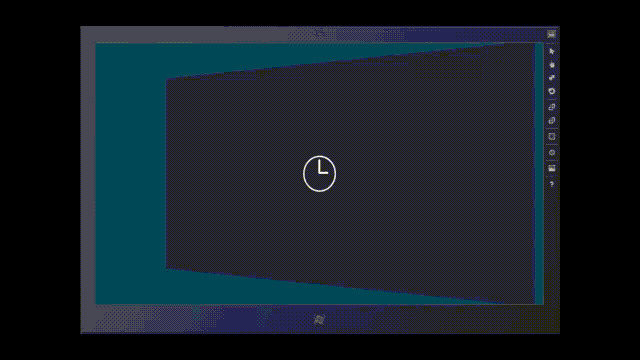

Animations in XAML
Animations can enhance your app by adding movement and interactivity. By using the animations from the Windows Runtime animation library, you can integrate the Windows look and feel into your app. This topic provides a summary of the animations and examples of typical scenarios where each is used.
Tip
The Windows Runtime controls for XAML include certain types of animations as built-in behaviors that come from an animation library. By using these controls in your app, you can get the animated look and feel without having to program it yourself.
Animations from the Windows Runtime animation library provide these benefits:
- Motions that align to the Guidelines for animations
- Fast, fluid transitions between UI states that inform but do not distract the user
- Visual behavior that indicates transitions within an app to the user
For example, when the user adds an item to a list, instead of the new item instantly appearing in the list, the new item animates into place. The other items in the list animate to their new positions over a short period of time, making room for the added item. The transition behavior here makes the control interaction more apparent to the user.
Windows 10, version 1607 introduces a new ConnectedAnimationService API for implementing animations where an element appears to animate between views during a navigation. This API has a different usage pattern from the other animation library API's. Usage of ConnectedAnimationService is covered in the reference page.
The animation library does not provide animations for every possible scenario. There are cases where you might wish to create a custom animation in XAML. For more info, see Storyboarded animations.
Additionally, for certain advanced scenarios like animating an item based on scroll position of a ScrollViewer, developers may wish to use Visual Layer interoperation to implement custom animations. See Visual Layer for more information.
Types of animations
The Windows Runtime animation system and the animation library serve the larger goal of enabling controls and other parts of UI to have an animated behavior. There are several distinct types of animations.
- Theme transitions are applied automatically when certain conditions change in the UI, involving controls or elements from the predefined Windows Runtime XAML UI types. These are termed theme transitions because the animations support the Windows look and feel, and define what all apps do for particular UI scenarios when they change from one interaction mode to another. The theme transitions are part of the animation library.
- Theme animations are animations to one or more properties of predefined Windows Runtime XAML UI types. Theme animations differ from theme transitions because theme animations target one specific element and exist in specific visual states within a control, whereas the theme transitions are assigned to properties of the control that exist outside of the visual states and influence the transitions between those states. Many of the Windows Runtime XAML controls include theme animations within storyboards that are part of their control template, with the animations triggered by visual states. So long as you're not modifying the templates, you'll have those built-in theme animations available for the controls in your UI. However, if you do replace templates, then you'll be removing the built-in control theme animations too. To get them back, you must define a storyboard that includes theme animations within the control's set of visual states. You can also run theme animations from storyboards that aren't within visual states and start them with the Begin method, but that's less common. Theme animations are part of the animation library.
- Visual transitions are applied when a control transitions from one of its defined visual states to another state. These are custom animations that you write, and are typically related to the custom template you write for a control and the visual state definitions within that template. The animation only runs during the time between states, and that's typically a short amount of time, a few seconds at most. For more info, see "VisualTransition" section of Storyboarded animations for visual states.
- Storyboarded animations animate the value of a Windows Runtime dependency property over time. Storyboards can be defined as part of a visual transition, or triggered at runtime by the application. For more info, see Storyboarded animations. For more info about dependency properties and where they exist, see Dependency properties overview.
- Connected animations provided by the new ConnectedAnimationService API allow developers to easily create an effect where an element appears to animate between views during a navigation. This API is available starting in Windows 10, version 1607. See ConnectedAnimationService for more information.
Animations available in the library
The following animations are supplied in the animation library. Click on the name of an animation to learn more about their main usage scenarios, how to define them, and to see an example of the animation.
- Page transition: Animates page transitions in a Frame.
- Content and entrance transition: Animates one piece or set of content into or out of view.
- Fade in/out, and crossfade: Shows transient elements or controls, or refreshes a content area.
- Pointer up/down: Gives visual feedback of a tap or click on a tile.
- Reposition: Moves an element into a new position.
- Show/hide popup: Displays contextual UI on top of the view.
- Show/hide edge UI: Slides edge-based UI, including large UI such as a panel, into or out of view.
- List item changes: Adds or deletes an item from a list, or reordering of the items.
- Drag/drop: Gives visual feedback during a drag-and-drop operation.
Page transition
Use page transitions to animate navigation within an app. Since almost all apps use some kind of navigation, page transition animations are the most common type of theme animation used by apps. See NavigationThemeTransition for more information about the page transition APIs.
Content transition and entrance transition
Use content transition animations (ContentThemeTransition) to move a piece or a set of content into or out of the current view. For example, the content transition animations show content that was not ready to display when the page was first loaded, or when the content changes on a section of a page.
EntranceThemeTransition represents a motion that can apply to content when a page or large section of UI is first loaded. Thus the first appearance of content can offer different feedback than a change to content does. EntranceThemeTransition is equivalent to a NavigationThemeTransition with the default parameters, but may be used outside of a Frame.
Fade in/out, and crossfade
Use fade in and fade out animations to show or hide transient UI or controls. In XAML these are represented as FadeInThemeAnimation and FadeOutThemeAnimation. One example is in an app bar in which new controls can appear due to user interaction. Another example is a transient scroll bar or panning indicator that is faded out after no user input has been detected for some amount of time. Apps should also use the fade in animation when they transition from a placeholder item to the final item as content loads dynamically.
Use a crossfade animation to smooth the transition when an item's state is changing; for example, when the app refreshes the current contents of a view. The XAML animation library does not supply a dedicated crossfade animation (no equivalent for crossFade), but you can achieve the same result using FadeInThemeAnimation and FadeOutThemeAnimation with overlapped timing.
Pointer up/down
Use the PointerUpThemeAnimation and PointerDownThemeAnimation animations to give the user feedback for a successful tap or click on a tile. For example, when a user clicks or taps down on a tile, the pointer down animation is played. Once the click or tap has been released, the pointer up animation is played.
Reposition
Use the reposition animations (RepositionThemeAnimation or RepositionThemeTransition) to move an element into a new position. For example, moving the headers in an items control uses the reposition animation.
Show/hide popup
Use the PopInThemeAnimation and PopOutThemeAnimation when you show and hide a Popup or similar contextual UI on top of the current view. PopupThemeTransition is a theme transition that's useful feedback if you want to light dismiss a popup.
Show/hide edge UI
Use the EdgeUIThemeTransition animation to slide small, edge-based UI into and out of view. For example, use these animations when you show a custom app bar at the top or bottom of the screen or a UI surface for errors and warnings at the top of the screen.
Use the PaneThemeTransition animation to show and hide a pane or panel. This is for large edge-based UI such as a custom keyboard or a task pane.
List item changes
Use the AddDeleteThemeTransition animation to add animated behavior when you add or delete an item in an existing list. For add, the transition will first reposition existing items in the list to make space for the new items, and then add the new items. For delete, the transition removes items from a list and, if necessary, repositions the remaining list items once the deleted items have been removed.
There's also a separate ReorderThemeTransition that you apply if an item changes position in a list. This is animated differently than deleting an item and adding it in a new place with the associated delete/add animations.
Note that these animations are included in the default ListView and GridView templates so you do not need to manually add these animations if you are already using these controls.
Drag/drop
Use the drag animations (DragItemThemeAnimation, DragOverThemeAnimation) and drop animation (DropTargetItemThemeAnimation) to give visual feedback when the user drags or drops an item.
When active, the animations show the user that the list can be rearranged around a dropped item. It is helpful for users to know where the item will be placed in a list if it is dropped at the current location. The animations give visual feedback that an item being dragged can be dropped between two other items in the list and that those items will move out of the way.
Using animations with custom controls
The following table summarizes our recommendations for which animation you should use when you create a custom version of these Windows Runtime controls:
| UI type | Recommended animation |
|---|---|
| Dialog box | FadeInThemeAnimation and FadeOutThemeAnimation |
| Flyout | PopInThemeAnimation and PopOutThemeAnimation |
| Tooltip | FadeInThemeAnimation and FadeOutThemeAnimation |
| Context menu | PopInThemeAnimation and PopOutThemeAnimation |
| Command bar | EdgeUIThemeTransition |
| Task pane or edge-based panel | PaneThemeTransition |
| Contents of any UI container | ContentThemeTransition |
| For controls or if no other animation applies | FadeInThemeAnimation and FadeOutThemeAnimation |
Transition animation examples
Ideally, your app uses animations to enhance the user interface or to make it more attractive without annoying your users. One way you can do this is to apply animated transitions to UI so that when something enters or leaves the screen or otherwise changes, the animation draws the attention of the user to the change. For example, your buttons may rapidly fade in and out of view rather than just appear and disappear. We created a number of APIs that can be used to create recommended or typical animation transitions that are consistent. The example here shows how to apply an animation to a button so that it swiftly slides into view.
<Button Content="Transitioning Button">
<Button.Transitions>
<TransitionCollection>
<EntranceThemeTransition/>
</TransitionCollection>
</Button.Transitions>
</Button>
In this code, we add the EntranceThemeTransition object to the transition collection of the button. Now, when the button is first rendered, it swiftly slides into view rather than just appear. You can set a few properties on the animation object in order to adjust how far it slides and from what direction, but it's really meant to be a simple API for a specific scenario, that is, to make an eye-catching entrance.
You can also define transition animation themes in the style resources of your app, allowing you to apply the effect uniformly. This example is equivalent to the previous one, only it is applied using a Style:
<UserControl.Resources>
<Style x:Key="DefaultButtonStyle" TargetType="Button">
<Setter Property="Transitions">
<Setter.Value>
<TransitionCollection>
<EntranceThemeTransition/>
</TransitionCollection>
</Setter.Value>
</Setter>
</Style>
</UserControl.Resources>
<StackPanel x:Name="LayoutRoot">
<Button Style="{StaticResource DefaultButtonStyle}" Content="Transitioning Button"/>
</StackPanel>
The previous examples apply a theme transition to an individual control, however, theme transitions are even more interesting when you apply them to a container of objects. When you do this, all the child objects of the container take part in the transition. In the following example, an EntranceThemeTransition is applied to a Grid of rectangles.
<!-- If you set an EntranceThemeTransition animation on a panel, the
children of the panel will automatically offset when they animate
into view to create a visually appealing entrance. -->
<ItemsControl Grid.Row="1" x:Name="rectangleItems">
<ItemsControl.ItemContainerTransitions>
<TransitionCollection>
<EntranceThemeTransition/>
</TransitionCollection>
</ItemsControl.ItemContainerTransitions>
<ItemsControl.ItemsPanel>
<ItemsPanelTemplate>
<WrapGrid Height="400"/>
</ItemsPanelTemplate>
</ItemsControl.ItemsPanel>
<!-- The sequence children appear depends on their order in
the panel's children, not necessarily on where they render
on the screen. Be sure to arrange your child elements in
the order you want them to transition into view. -->
<ItemsControl.Items>
<Rectangle Fill="Red" Width="100" Height="100" Margin="10"/>
<Rectangle Fill="Red" Width="100" Height="100" Margin="10"/>
<Rectangle Fill="Red" Width="100" Height="100" Margin="10"/>
<Rectangle Fill="Red" Width="100" Height="100" Margin="10"/>
<Rectangle Fill="Red" Width="100" Height="100" Margin="10"/>
<Rectangle Fill="Red" Width="100" Height="100" Margin="10"/>
<Rectangle Fill="Red" Width="100" Height="100" Margin="10"/>
<Rectangle Fill="Red" Width="100" Height="100" Margin="10"/>
<Rectangle Fill="Red" Width="100" Height="100" Margin="10"/>
</ItemsControl.Items>
</ItemsControl>
The child rectangles of the Grid transition into view one after the other in a visually pleasing way rather than all at once as would be the case if you applied this animation to the rectangles individually.
Here's a demonstration of this animation:

Child objects of a container can also re-flow when one or more of those children change position. In the following example, we apply a RepositionThemeTransition to a grid of rectangles. When you remove one of the rectangles, all the other rectangles re-flow into their new position.
<Button Content="Remove Rectangle" Click="RemoveButton_Click"/>
<ItemsControl Grid.Row="1" x:Name="rectangleItems">
<ItemsControl.ItemContainerTransitions>
<TransitionCollection>
<!-- Without this, there would be no animation when items
are removed. -->
<RepositionThemeTransition/>
</TransitionCollection>
</ItemsControl.ItemContainerTransitions>
<ItemsControl.ItemsPanel>
<ItemsPanelTemplate>
<WrapGrid Height="400"/>
</ItemsPanelTemplate>
</ItemsControl.ItemsPanel>
<!-- All these rectangles are just to demonstrate how the items
in the grid re-flow into position when one of the child items
are removed. -->
<ItemsControl.Items>
<Rectangle Fill="Red" Width="100" Height="100" Margin="10"/>
<Rectangle Fill="Red" Width="100" Height="100" Margin="10"/>
<Rectangle Fill="Red" Width="100" Height="100" Margin="10"/>
<Rectangle Fill="Red" Width="100" Height="100" Margin="10"/>
<Rectangle Fill="Red" Width="100" Height="100" Margin="10"/>
<Rectangle Fill="Red" Width="100" Height="100" Margin="10"/>
<Rectangle Fill="Red" Width="100" Height="100" Margin="10"/>
<Rectangle Fill="Red" Width="100" Height="100" Margin="10"/>
<Rectangle Fill="Red" Width="100" Height="100" Margin="10"/>
</ItemsControl.Items>
</ItemsControl>
private void RemoveButton_Click(object sender, RoutedEventArgs e)
{
if (rectangleItems.Items.Count > 0)
{
rectangleItems.Items.RemoveAt(0);
}
}
// .h
private:
void RemoveButton_Click(Platform::Object^ sender, Windows::UI::Xaml::RoutedEventArgs^ e);
//.cpp
void BlankPage::RemoveButton_Click(Platform::Object^ sender, Windows::UI::Xaml::RoutedEventArgs^ e)
{
if (rectangleItems->Items->Size > 0)
{
rectangleItems->Items->RemoveAt(0);
}
}
You can apply multiple transition animations to a single object or object container. For example, if you want the list of rectangles to animate into view and also animate when they change position, you can apply the RepositionThemeTransition and EntranceThemeTransition like this:
...
<ItemsControl.ItemContainerTransitions>
<TransitionCollection>
<EntranceThemeTransition/>
<RepositionThemeTransition/>
</TransitionCollection>
</ItemsControl.ItemContainerTransitions>
...
There are several transition effects to create animations on your UI elements as they are added, removed, reordered, and so on. The names of these APIs all contain "ThemeTransition":
| API | Description |
|---|---|
| NavigationThemeTransition | Provides a Windows personality animation for page navigation in a Frame. |
| AddDeleteThemeTransition | Provides the animated transition behavior for when controls add or delete children or content. Typically the control is an item container. |
| ContentThemeTransition | Provides the animated transition behavior for when the content of a control is changing. You can apply this in addition to AddDeleteThemeTransition. |
| EdgeUIThemeTransition | Provides the animated transition behavior for a (small) edge UI transition. |
| EntranceThemeTransition | Provides the animated transition behavior for when controls first appear. |
| PaneThemeTransition | Provides the animated transition behavior for a panel (large edge UI) UI transition. |
| PopupThemeTransition | Provides the animated transition behavior that applies to pop-in components of controls (for example, tooltip-like UI on an object) as they appear. |
| ReorderThemeTransition | Provides the animated transition behavior for when list-view controls items change order. Typically this happens as a result of a drag-drop operation. Different controls and themes can have varying characteristics for the animations. |
| RepositionThemeTransition | Provides the animated transition behavior for when controls change position. |
Theme animation examples
Transition animations are simple to apply. But you may want to have a bit more control over the timing and order of your animation effects. You can use theme animations to enable more control while still using a consistent theme for how your animation behaves. Theme animations also require less markup than custom animations. Here, we use the FadeOutThemeAnimation to make a rectangle fade out of view.
<StackPanel>
<StackPanel.Resources>
<Storyboard x:Name="myStoryboard">
<FadeOutThemeAnimation TargetName="myRectangle" />
</Storyboard>
</StackPanel.Resources>
<Rectangle PointerPressed="Rectangle_Tapped" x:Name="myRectangle"
Fill="Blue" Width="200" Height="300"/>
</StackPanel>
// When the user taps the rectangle, the animation begins.
private void Rectangle_Tapped(object sender, PointerRoutedEventArgs e)
{
myStoryboard.Begin();
}
' When the user taps the rectangle, the animation begins.
Private Sub Rectangle_Tapped(sender As Object, e As PointerRoutedEventArgs)
myStoryboard.Begin()
End Sub
//.h
void Rectangle_Tapped(Platform::Object^ sender, Windows::UI::Xaml::Input::PointerRoutedEventArgs^ e);
//.cpp
void BlankPage::Rectangle_Tapped(Object^ sender, PointerRoutedEventArgs^ e)
{
myStoryboard->Begin();
}
Unlike transition animations, a theme animation doesn't have a built-in trigger (the transition) that runs it automatically. You must use a Storyboard to contain a theme animation when you define it in XAML. You can also change the default behavior of the animation. For example, you can slow down the fade-out by increasing the Duration time value on the FadeOutThemeAnimation.
Note For purposes of showing basic animation techniques, we're using app code to start the animation by calling methods of Storyboard. You can control how the Storyboard animations run using the Begin, Stop, Pause, and Resume Storyboard methods. However, that's not typically how you include library animations in apps. Rather, you usually integrate the library animations into the XAML styles and templates applied to controls or elements. Learning about templates and visual states is a little more involved. But we do cover how you'd use library animations in visual states as part of the Storyboarded animations for visual states topic.
You can apply several other theme animations to your UI elements to create animation effects. The names of these API all contain "ThemeAnimation":
| API | Description |
|---|---|
| DragItemThemeAnimation | Represents the preconfigured animation that applies to item elements being dragged. |
| DragOverThemeAnimation | Represents the preconfigured animation that applies to the elements underneath an element being dragged. |
| DropTargetItemThemeAnimation | The preconfigured animation that applies to potential drop target elements. |
| FadeInThemeAnimation | The preconfigured opacity animation that applies to controls when they first appear. |
| FadeOutThemeAnimation | The preconfigured opacity animation that applies to controls when they are removed from UI or hidden. |
| PointerDownThemeAnimation | The preconfigured animation for user action that taps or clicks an item or element. |
| PointerUpThemeAnimation | The preconfigured animation for user action that runs after a user taps down on an item or element and the action is released. |
| PopInThemeAnimation | The preconfigured animation that applies to pop-in components of controls as they appear. This animation combines opacity and translation. |
| PopOutThemeAnimation | The preconfigured animation that applies to pop-in components of controls as they are closed or removed. This animation combines opacity and translation. |
| RepositionThemeAnimation | The preconfigured animation for an object as it is repositioned. |
| SplitCloseThemeAnimation | The preconfigured animation that conceals a target UI using an animation in the style of a ComboBox opening and closing. |
| SplitOpenThemeAnimation | The preconfigured animation that reveals a target UI using an animation in the style of a ComboBox opening and closing. |
| DrillInThemeAnimation | Represents a preconfigured animation that runs when a user navigates forward in a logical hierarchy, like from a list page to a detail page. |
| DrillOutThemeAnimation | Represents a preconfigured animation that runs when a user navigates backward in a logical hierarchy, like from a detail page to a list page. |
Create your own animations
When theme animations are not enough for your needs, you can create your own animations. You animate objects by animating one or more of their property values. For example, you can animate the width of a rectangle, the angle of a RotateTransform, or the color value of a button. We term this type of custom animation a storyboarded animation, to distinguish it from the library animations that the Windows Runtime already provides as a preconfigured animation type. For storyboarded animations, you use an animation that can change values of a particular type (for example DoubleAnimation to animate a Double) and put that animation within a Storyboard to control it.
In order to be animated, the property you are animating must be a dependency property. For more info about dependency properties, see Dependency properties overview. For more info on creating custom storyboarded animations, including how to target and control them, see Storyboarded animations.
The biggest area of app UI definition in XAML where you'll define custom storyboarded animations is if you are defining visual states for controls in XAML. You'll be doing this either because you are creating a new control class, or because you are re-templating an existing control that has visual states in its control template. For more info, see Storyboarded animations for visual states.